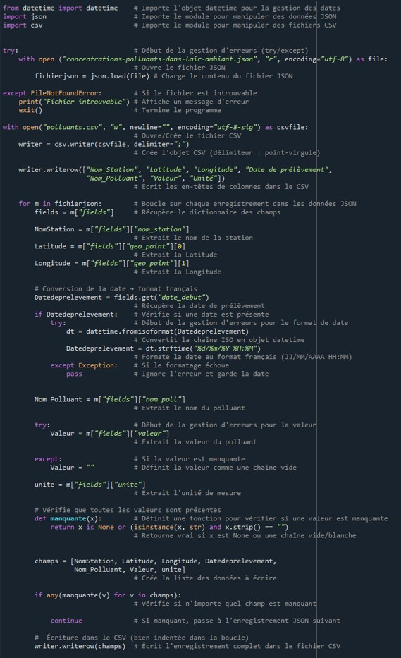
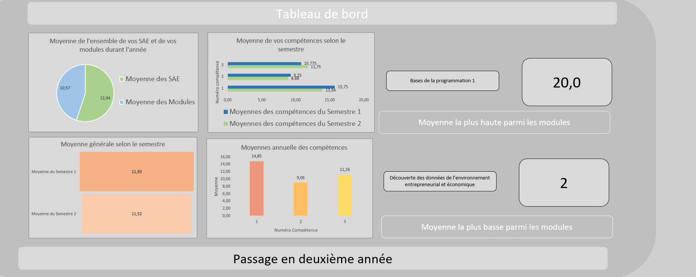

Evan
Portfolio
À propos de moi
Je m'appelle Evan Caillard et je suis actuellement en première année de BUT Science des données à Niort.
Orienté vers l'analyse et la compréhension des données, j'aborde chaque projet avec la volonté d'allier rigueur technique et créativité afin de proposer des solutions simples et performantes. Ce portfolio retrace mes premiers travaux d'études ainsi que mes expérimentations personnelles, qui me permettent d'enrichir quotidiennement mes compétences.
// Passion & Curiosité
En dehors de mes études, je développe ma curiosité et mon sens du détail à travers la pratique de l’analyse de données dans le monde du football.
Projets
SAÉ : Gestion de fichiers
Cette SAÉ demande de concevoir un script en Python pour traiter et nettoyer un jeu de données JSON sur la pollution de l'air à Poitiers. L'objectif principal est de transformer ce fichier initial pour l'exporter au format CSV en utilisant le point-virgule comme séparateur. Lors de cette conversion, le script doit filtrer les données pour ne conserver que les lignes complètes et adapter le format des dates aux standards français. Enfin, le fichier final devra respecter des contraintes de codage spécifiques pour garantir sa parfaite lisibilité lors d'une ouverture sous Excel.

SAÉ : Création d’un reporting
Cette SAÉ impose de concevoir un outil de gestion des notes sur Excel doté d'une base de données structurée, de formulaires de saisie et d'un tableau de bord dynamique avec graphiques. L'application doit générer un guide d'utilisation et automatiser la décision du jury concernant le passage en deuxième année du BUT SD1 selon des règles de moyenne précises. Le projet sera évalué à parts égales sur la qualité technique du fichier (formules Excel et VBA optimisé) et sur une soutenance orale individuelle.

Prochaine SAÉ
Envoie-moi la description et l'image de ta troisième SAÉ quand tu le souhaites, et je l'ajouterai directement ici.
Bilan Personnel
Ma première année en BUT Science des données à Niort a été une étape clé pour poser les fondations de mon profil technique. Entre la théorie des cours et la pratique des projets, cette année m'a permis de passer de la simple curiosité à la maîtrise de mes premiers outils d'analyse.
Sur le plan technique, j'ai développé des compétences en programmation et en manipulation de données, notamment à travers l'apprentissage de bases de données et de langages clés du secteur. Au-delà des chiffres, cette formation m'a appris à nettoyer, structurer et interpréter la donnée pour la rendre lisible et utile.
Ce cursus m'a également poussé à développer mon autonomie et mon esprit d'équipe, notamment lors des SAÉ (Situations d'Apprentissage et d'Évaluation) où nous devions résoudre des problématiques concretes en groupe, souvent sous forme de gestion de projet.
// Conclusion & Perspectives
Aujourd'hui, je dresse un bilan très positif de cette première année : elle a confirmé mon intérêt pour ce domaine et m'a donné toutes les clés nécessaires pour aborder la deuxième année avec ambition, notamment dans mes projets personnels liés à la data dans le football.
Curriculum Vitae
Consultez ou téléchargez mon parcours académique et professionnel mis à jour.
Télécharger le CV